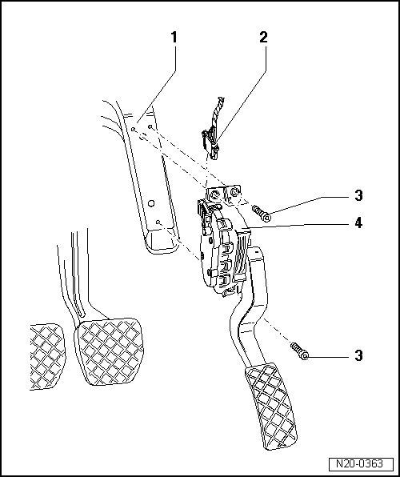

Electronic Throttle Actuator: Service and Repair
Electronic Engine Power Control, Assembly Overview

1 Bracket
2 Connector
• Black, 6-pin
3 10 Nm
4 Throttle Position (TP) sensor (G79) with accelerator pedal position sensor 2 (G185)
• Not adjustable
• Remove foot well cover to remove sensor